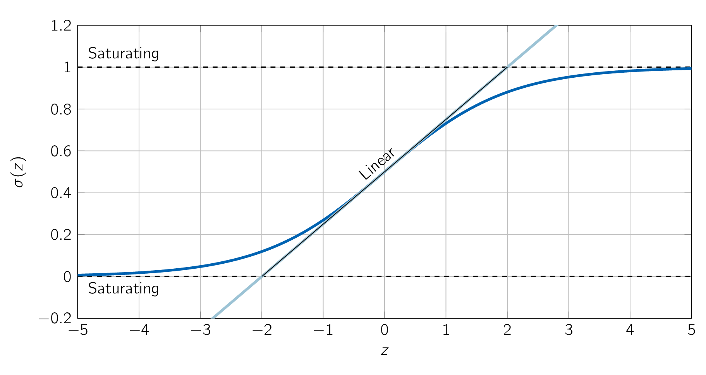
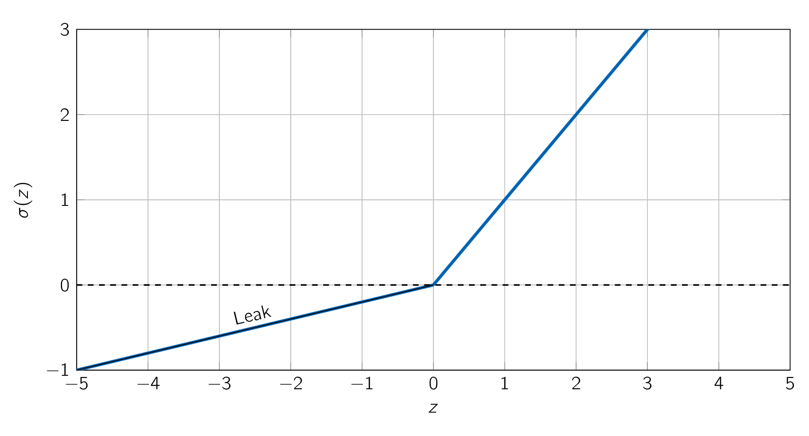
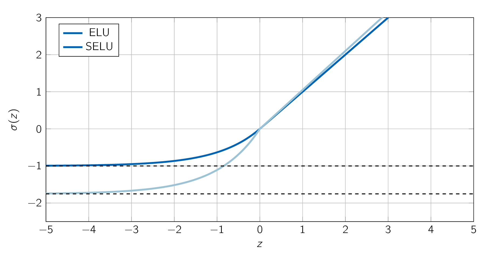
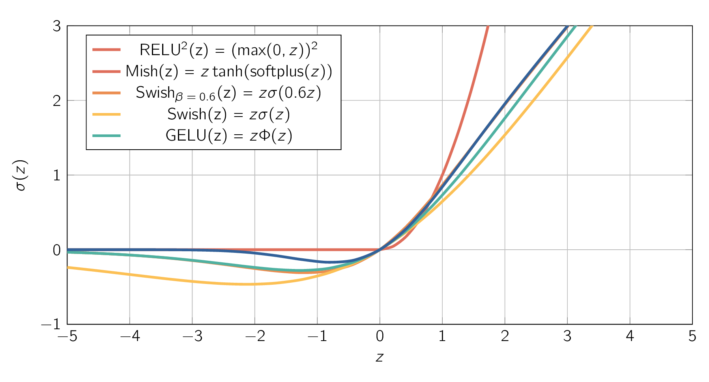
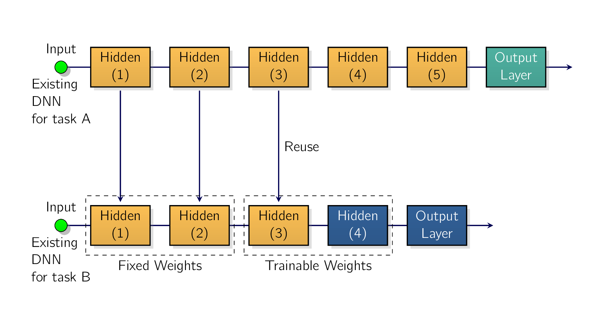
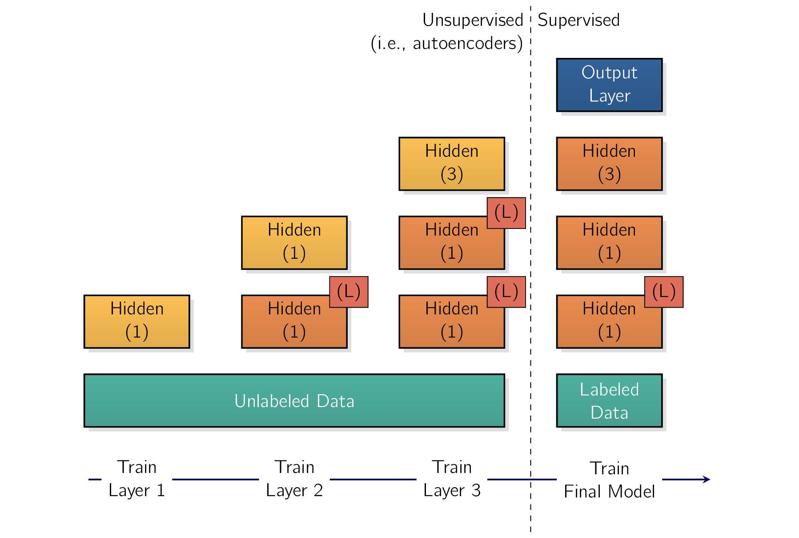
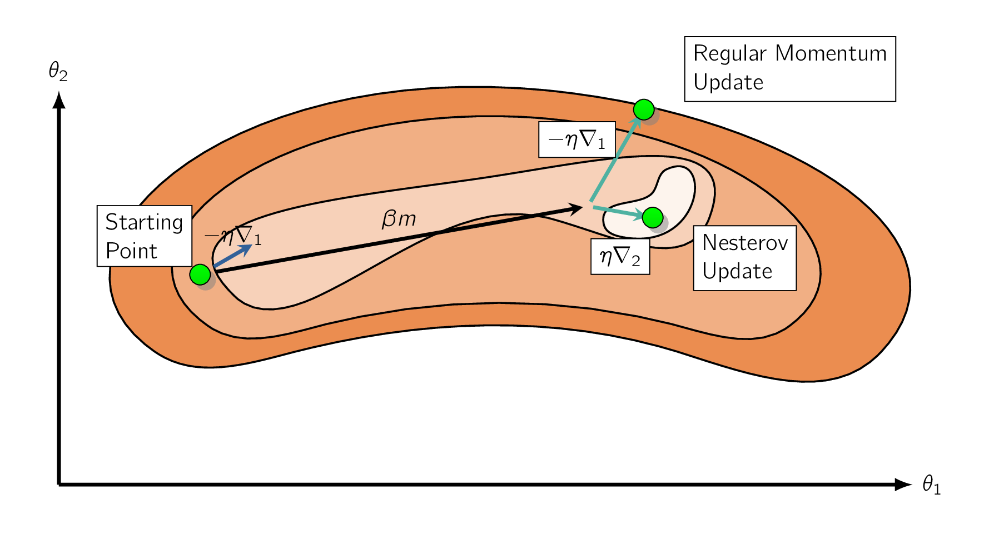

As we have seen in Introduction to Artificial Neural Networks, the backpropagation algorithm’s -phase works by going from the output layer to the input layer, propagating the error gradient along the way.
Once the algorithm has computed the gradient of the cost function with regard to each parameter in the network, it uses these gradients to update each parameter with a gradient descent step.
Unfortunately, gradients often get smaller and smaller as the algorithm progresses down to the lower layers. As a result, the gradient descent update leaves the lower layers’ connection weights virtually unchanged, and training never converges to a good solution. [†-1] Basodi, S. et al. Gradient Amplification: An efficient way to train deep neural networks. Big Data Min. Anal. 3, 196–207 (2020)
This is called the vanishing gradients problem [†-2] Hochreiter, S. The Vanishing Gradient Problem During Learning Recurrent Neural Nets and Problem Solutions. Int. J. Uncertain. Fuzziness Knowl. Based Syst. 6, 107–116 (1998).
Interestingly in some cases, the opposite can happen:
This is the exploding gradients problem . [118] which surfaces most often in RNNRecurrent Neural Networksa type of ANN designed to process sequential data, such as text, speech, or time series, by passing information through loops from one step to the nexts. [†-3] Balduzzi, D. et al. The Shattered Gradients Problem: If resnets are the answer, then what is the question? ArXiv abs/1702.08591 (2017)
More generally, DNNDeep Neural NetworksDeep Neural Networkss suffer from unstable gradients where different layers may learn at widely different speeds. This unfortunate behavior was empirically observed long ago, and it was one of the reasons DNNDeep Neural NetworksDeep Neural Networkss were mostly abandoned in the early 2000s. It wasn’t clear what caused the gradients to be so unstable when training a DNNDeep Neural NetworksDeep Neural Networks, but some light was shed in [†-4] Glorot, X. & Bengio, Y. Understanding the difficulty of training deep feedforward neural networks in Proceedings of the thirteenth international conference on artificial intelligence and statistics (2010), 249–256, where the authors found a few suspects, including the combination of the popular sigmoid (logistic) activation function and the weight initialization technique that was most popular at the time. [119] i.e., a normal distribution with a mean of 0 and a standard deviation of 1
In short, the authors showed that with this activation function and this initialization scheme, the variance of the outputs of each layer is much greater than the variance of its inputs. Going forward in the network, the variance keeps increasing after each layer until the activation function saturates at the top layers. This saturation is actually made worse by the fact that the sigmoid function has a mean of 0.5, not 0. [120] the hyperbolic tangent function has a mean of 0 and behaves slightly better than the sigmoid function in DNNDeep Neural NetworksDeep Neural Networkss.
Looking at the sigmoid activation function, we see that when inputs become large, [121] either in the negative or positive direction. the function saturates at 0 or 1, with a derivative extremely close to 0. [122] i.e., the curve is flat at both extremes, meaning the rate of change becomes vanishingly small. Therefore, when backpropagation kicks in it has virtually no gradient to propagate back through the network, and what little gradient exists keeps getting diluted as backpropagation progresses down through the top layers, so there is really nothing left for the lower layers.

In [†-4] Glorot, X. & Bengio, Y. Understanding the difficulty of training deep feedforward neural networks in Proceedings of the thirteenth international conference on artificial intelligence and statistics (2010), 249–256, the authors proposed a way to significantly alleviate the unstable gradients problem. They pointed out that we need the signal to flow properly in both directions:
We don’t want the signal to die out, nor do we want it to explode and saturate. For the signal to flow properly, the authors argued that we need the variance of the outputs of each layer to be equal to the variance of its inputs, [123] Here’s an analogy: if we set a microphone amplifier’s volume knob too close to zero, people won’t hear our voice, but if we set it too close to the max, our voice will be saturated and people won’t understand what we are saying. Now imagine a chain of such amplifiers: they all need to be set properly in order for our voice to come out loud and clear at the end of the chain. Our voice has to come out of each amplifier at the same amplitude as it came in. and we need the gradients to have equal variance before and after flowing through a layer in the reverse direction.
It is actually NOT possible to guarantee both unless the layer has an equal number of inputs and outputs, [124] these numbers are called the fan-in and fan-out of the layer. but the authors proposed a good compromise which has proven to work very well in practice, where the connection weights of each layer must be initialized randomly, as described in Eq. (3.2), where
| (3.1) |
This initialization strategy in literature is called Xavier initialization or Glorot initialization , after the authors of [†-4] Glorot, X. & Bengio, Y. Understanding the difficulty of training deep feedforward neural networks in Proceedings of the thirteenth international conference on artificial intelligence and statistics (2010), 249–256.
| (3.2) |
If we replace with in Eq. (3.2) , we get an initialization strategy Yann LeCun proposed in the 1990s. He called it LeCun initialization . [125] Genevieve Orr and Klaus-Robert Müller even recommended it in their 1998 book Neural Networks: Tricks of the Trade.
LeCun initialization is equivalent to Glorot initialization when .
It took over a decade for researchers to realize how important this trick is.
Using Glorot initialization can speed up training considerably, and it is one of the tricks that led to the success of DLDeep LearningA subset of machine learning that uses multi-layered artificial neural networks to mimic human brain function. It automatically extracts complex patterns and abstract features from vast amounts of unstructured data, powering modern applications like computer vision, speech recognition, and large language models..
Some papers have provided similar strategies for different activation functions, most notably in [†-5] He, K. et al. Delving deep into rectifiers: Surpassing human-level performance on imagenet classification in Proceedings of the IEEE international conference on computer vision (2015), 1026–1034. These strategies differ only by the scale of the variance and whether they use or , as shown in Tbl. 3.1. [126] for the uniform distribution, just use The initialization strategy proposed for the RELURectified Linear UnitA popular activation function in ANNs that outputs the input directly if it is positive, and returns zero if it is negative. activation function and its variants is called He initialization or Kaiming initialization , after the paper’s first author.
For SELUScaled Exponential Linear UnitA self-normalizing activation function that maintains a zero mean and unit variance across neural network layers, use Yann LeCun’s initialization method, preferably with a normal distribution.
| Initialisation | Activation Functions | Variance |
| Xavier Glorot | None, tanh, sigmoid, softmax | |
| Kaiming He | ReLU, Leaky ReLU, ELU, GELU, Swish, Mish, SwiGLU, ReLU2 | |
| Yann LeCun | SELU |
For historical reasons, PyTorch’s nn.Linear
One solution is to simply multiply the weights by
just
after creating the nn.Linear layer to get proper Kaiming initialization. To do this, we can update the
parameter’s data
import torch
import torch.nn as nn
layer = nn.Linear(40, 10)
layer.weight.data *= 6 ** 0.5 # Kaiming init (or 3 ** 0.5 for LeCun init)
torch.zero_(layer.bias.data)
This works, but it’s clearer and less error-prone to use one of the initialization functions available in the
torch.nn.init
layer = nn.Linear(40, 10)
nn.init.kaiming_uniform_(layer.weight)
nn.init.zeros_(layer.bias)
If we want to apply the same initialization method to the weights of every nn.Linear layer in a model, we can
do so in the model’s constructor, after creating each nn.Linear layer. Alternatively, we can write a
subclass of the nn.Linear class and tweak its constructor to initialize the weights as we wish. But
arguably the simplest option is to write a little function that takes a module, checks whether
it’s an instance of the nn.Linear class, and if so, applies the desired initialization function to its
weights.
We can then apply this function to the model and all of its submodules by passing it to the model’s apply()
method. For example:
def use_he_init(module):
if isinstance(module, nn.Linear):
nn.init.kaiming_uniform_(module.weight)
nn.init.zeros_(module.bias)
model = nn.Sequential(nn.Linear(50, 40), nn.ReLU(), nn.Linear(40, 1), nn.ReLU())
model.apply(use_he_init)
The torch.nn.init module also contains an orthogonal_() function which initializes the weights using a random orthogonal
matrix, as proposed in [†-6] Saxe, A. M., McClelland, J. L. & Ganguli, S. Exact solutions to the
nonlinear dynamics of learning in deep linear neural networks. arXiv preprint arXiv:1312.6120
(2013).
Orthogonal matrices have a number of useful mathematical properties, including the fact that they preserve norms:
This initialization technique is much less common than the initialization techniques discussed earlier, but it can work well in RNNRecurrent Neural Networksa type of ANN designed to process sequential data, such as text, speech, or time series, by passing information through loops from one step to the nexts or GANGeneral Adveserial Networksa ML framework introduced by Ian Goodfellow in 2014. They use two neural networks; a generator and a discriminator..
Scaling the weights properly will give a DNNDeep Neural NetworksDeep Neural Networks a much better starting point for training.
- ¶
- Information 3.28: Scale Down the Weights
-
In a classifier, it’s generally a good idea to scale down the weights of the output layer during initialization. [128] e.g., by a factor of 10. Indeed, this will result in smaller logits at the beginning of training, which means they will be closer together, and hence the estimated probabilities will also be closer together.
In other words, it encourages the model to be less confident about its predictions when training starts. This will avoid extreme losses and huge gradients that can often make the model’s weights bounce around randomly at the start of training, losing time and potentially preventing the model from learning anything.
One of the insights in [†-4] Glorot, X. & Bengio, Y. Understanding the difficulty of training deep feedforward neural networks in Proceedings of the thirteenth international conference on artificial intelligence and statistics (2010), 249–256 was that the problems with unstable gradients were in part due to a poor choice of activation function.
But it turns out that other activation functions behave much better in DNNDeep Neural NetworksDeep Neural Networkss, particularly, the RELURectified Linear UnitA popular activation function in ANNs that outputs the input directly if it is positive, and returns zero if it is negative. activation function, mostly because it does not saturate for positive values, and also because it is very fast to compute. Unfortunately, the RELURectified Linear UnitA popular activation function in ANNs that outputs the input directly if it is positive, and returns zero if it is negative. activation function is NOT perfect, as it suffers from a problem known as the dying ReLUs:
In some cases, we may find that half of our network’s neurons are dead, especially if we’ve used a large learning rate.
A neuron dies when its weights get tweaked in such a way that the input of the RELURectified Linear UnitA popular activation function in ANNs that outputs the input directly if it is positive, and returns zero if it is negative. function [129] i.e., the weighted sum of the neuron’s inputs plus its bias term. is negative for all instances in the training set.
When this happens, the neuron just keeps outputting zeros, and gradient descent does not affect it anymore because the gradient of the RELURectified Linear UnitA popular activation function in ANNs that outputs the input directly if it is positive, and returns zero if it is negative. function is zero when its input is negative. [130] A dead neuron may come back to life if its inputs evolve over time and eventually return within a range where the RELURectified Linear UnitA popular activation function in ANNs that outputs the input directly if it is positive, and returns zero if it is negative. activation function gets a positive input again. For example, this may happen if gradient descent tweaks the neurons in the layers below the dead neuron.
To solve this problem, you may want to use a variant of the RELURectified Linear UnitA popular activation function in ANNs that outputs the input directly if it is positive, and returns zero if it is negative. function, such as the leaky ReLU.
The leaky RELURectified Linear UnitA popular activation function in ANNs that outputs the input directly if it is positive, and returns zero if it is negative. activation function is defined as [†-7] Maas, A. L., Hannun, A. Y., Ng, A. Y., et al. Rectifier nonlinearities improve neural network acoustic models in Proc. icml 30 (2013), 3:
The hyperparameter, defines how much the function “leaks”:
Having a slope for ensures that leaky RELURectified Linear UnitA popular activation function in ANNs that outputs the input directly if it is positive, and returns zero if it is negative.s never actually die. [131] They can go into a dormant state, but have a chance to eventually wake up. A 2015 paper [†-8] Xu, B. et al. Empirical Evaluation of Rectified Activations in Convolutional Network. ArXiv abs/1505.00853 (2015) compared several variants of the RELURectified Linear UnitA popular activation function in ANNs that outputs the input directly if it is positive, and returns zero if it is negative. activation function, and one of its conclusions was that the leaky variants always outperformed the strict RELURectified Linear UnitA popular activation function in ANNs that outputs the input directly if it is positive, and returns zero if it is negative. activation function.
In fact, setting , which is a huge leak, seemed to result in better performance than , which is a small leak.
The paper also evaluated the RRELURandomized ReLUA stochastic activation function for neural networks where the negative slope is randomly sampled from a uniform distribution during training and then fixed to its average value during testing, where is picked randomly in a given range during training and is fixed to an average value during testing. RRELURandomized ReLUA stochastic activation function for neural networks where the negative slope is randomly sampled from a uniform distribution during training and then fixed to its average value during testing also performed fairly well and seemed to act as a regularizer, reducing the risk of overfitting. Finally, the paper evaluated the PRELUParametric ReLUAn activation function in deep learning that extends the standard ReLU Activation Function by making the negative slope a learnable parameter during training, where is authorized to be learned during training:
PRELUParametric ReLUAn activation function in deep learning that extends the standard ReLU Activation Function by making the negative slope a learnable parameter during training was reported to strongly outperform RELURectified Linear UnitA popular activation function in ANNs that outputs the input directly if it is positive, and returns zero if it is negative. on large image datasets, but on smaller datasets it runs the risk of overfitting the training set.

As we might expect, PyTorch includes modules for each of these activation functions:
nn.LeakyReLU , nn.RReLU , and nn.PReLU .
Just like for other RELURectified Linear UnitA popular activation function in ANNs that outputs the input directly if it is positive, and returns zero if it is negative. variants, we should use these along with Kaiming initialization, but the variance should be slightly smaller due to the negative slope: it should be scaled down by a factor of . PyTorch supports this:
kaiming_uni form_() and kaiming_normal_() functions, along with nonlinearity="leaky_relu" to get the appropriately adjusted Kaiming
initialization:
torch.manual_seed(42)
alpha = 0.2
model = nn.Sequential(nn.Linear(50, 40),
nn.LeakyReLU(negative_slope=alpha))
nn.init.kaiming_uniform_(model[0].weight, alpha, nonlinearity="leaky_relu")
model(torch.rand(2, 50)).shape
RELURectified Linear UnitA popular activation function in ANNs that outputs the input directly if it is positive, and returns zero if it is negative., leaky RELURectified Linear UnitA popular activation function in ANNs that outputs the input directly if it is positive, and returns zero if it is negative., and PRELUParametric ReLUAn activation function in deep learning that extends the standard ReLU Activation Function by making the negative slope a learnable parameter during training all suffer from the fact that they are not smooth functions as their slopes abruptly change at . As we saw in B.Sc Data Science I when we discussed LASSOLeast Absolute Shrinkage and Selection OperatorLeast Absolute Shrinkage and Selection Operator, this sort of discontinuity in the derivatives can make gradient descent bounce around the optimum and slow down convergence. So now we will look at some smooth variants of the ReLU activation function, starting with ELUExponential Linear UnitA neural network activation function designed to improve learning speed and fix limitations in standard functions like ReLU and SELUScaled Exponential Linear UnitA self-normalizing activation function that maintains a zero mean and unit variance across neural network layers.
In 2015, a paper by Djork-Arné Clevert et al. [†-9] Clevert, D.-A., Unterthiner, T. & Hochreiter, S. Fast and Accurate Deep Network Learning by Exponential Linear Units (ELUs). arXiv: Learning (2015) proposed a new activation function, called ELUExponential Linear UnitA neural network activation function designed to improve learning speed and fix limitations in standard functions like ReLU, which outperformed all the RELURectified Linear UnitA popular activation function in ANNs that outputs the input directly if it is positive, and returns zero if it is negative. variants in the authors’ experiments: training time was reduced, and the NNNeural NetworksNeural Networks performed better on the test set. Eq. (3.3) shows this activation function’s definition.
| (3.3) |
The ELUExponential Linear UnitA neural network activation function designed to improve learning speed and fix limitations in standard functions like ReLU activation function looks a lot like the RELURectified Linear UnitA popular activation function in ANNs that outputs the input directly if it is positive, and returns zero if it is negative. function, seen in Fig. 3.3, with a few major differences:
-
It takes on negative values when , which allows the unit to have an average output closer to 0 and helps alleviate the vanishing gradients problem.
The hyperparameter defines the opposite of the value that the ELUExponential Linear UnitA neural network activation function designed to improve learning speed and fix limitations in standard functions like ReLU function approaches when is a large negative number. It is usually set to 1, but we can tweak it like any other hyperparameter.
-
It has a nonzero gradient for , which avoids the dead neurons problem.
-
If is equal to 1, then the function is smooth everywhere, including around , which helps speed up gradient descent since it does not bounce as much to the left and right of .
Using ELUExponential Linear UnitA neural network activation function designed to improve learning
speed and fix limitations in standard functions like ReLU with PyTorch is as easy as using the nn.ELU
module, along with Kaiming initialization. The main drawback of the ELU activation function is that it
is slower to compute than the ReLU function and its variants. [132]
due to the use of the exponential
function.
Its faster convergence rate during training may compensate for that slow computation, but still, at test time an ELUExponential Linear UnitA neural network activation function designed to improve learning speed and fix limitations in standard functions like ReLU network will be a bit slower than a RELURectified Linear UnitA popular activation function in ANNs that outputs the input directly if it is positive, and returns zero if it is negative. network.

Not long after, a 2017 paper by Günter Klambauer et al. [†-10] Klambauer, G. et al. Self-Normalizing Neural Networks in Neural Information Processing Systems (2017) introduced the scaled ELUExponential Linear UnitA neural network activation function designed to improve learning speed and fix limitations in standard functions like ReLU (SELU) activation function:
The authors showed that if we build a NNNeural NetworksNeural Networks composed exclusively of a stack of dense layers, [133] i.e., MLPMulti-layer PerceptronsMulti-layer Perceptrons. and if all hidden layers use the SELUScaled Exponential Linear UnitA self-normalizing activation function that maintains a zero mean and unit variance across neural network layers activation function, then the network will self-normalize:
As a result, the SELUScaled Exponential Linear UnitA self-normalizing activation function that
maintains a zero mean and unit variance across neural network layers activation function may
outperform other activation functions for MLPMulti-layer PerceptronsMulti-layer Perceptronss,
especially deep ones. To use it with PyTorch, just use nn.SELU . There are, however, a few conditions for
self-normalization to happen:
-
The input features must be standardized, meaning a mean 0 and standard deviation 1.
-
Every hidden layer’s weights must be initialized using LeCun normal initialization.
-
The self-normalizing property is only guaranteed with plain MLPMulti-layer PerceptronsMulti-layer Perceptronss. If we try to use SELUScaled Exponential Linear UnitA self-normalizing activation function that maintains a zero mean and unit variance across neural network layers in other architectures, like RNNRecurrent Neural Networksa type of ANN designed to process sequential data, such as text, speech, or time series, by passing information through loops from one step to the next or networks with skip connections, [134] i.e., connections that skip layers, such as in Wide & Deep neural networks. it will probably not outperform ELUExponential Linear UnitA neural network activation function designed to improve learning speed and fix limitations in standard functions like ReLU.
-
We cannot use regularization techniques like or regularization, batch-norm, layer-norm, max-norm, or regular dropout.
These are significant constraints, so despite its promises, SELUScaled Exponential Linear UnitA self-normalizing activation function that maintains a zero mean and unit variance across neural network layers did not gain a lot of traction. Moreover, other activation functions seem to outperform it quite consistently on most tasks. Let’s look at some of the most popular ones.
The Gaussian Error Linear Unit (GELU) was introduced in a 2016 paper by Dan Hendrycks and Kevin Gimpel [†-11] Hendrycks, D. & Gimpel, K. Gaussian Error Linear Units (GELUs). arXiv: Learning (2016). Once again, we can think of it as a smooth variant of the RELURectified Linear UnitA popular activation function in ANNs that outputs the input directly if it is positive, and returns zero if it is negative. activation function. Its definition is given in Eq. (3.4), where is the standard Gaussian CDFCumulative Density Functiongives the probability that a real-valued random variable X will take a value less than or equal to a given number.:
| (3.4) |
As we can see in Fig. 3.4, GELU resembles RELURectified Linear UnitA popular activation function in ANNs that outputs the input directly if it is positive, and returns zero if it is negative.:
However, whereas all the activation functions we’ve discussed so far were both convex and monotonic, [135] A function is convex if the line segment between any two points on the curve never lies below the curve. A monotonic function only increases, or only decreases. the GELU activation function is neither: from left to right, it starts by going straight, then it wiggles down, reaches a low point around 0.17, near ), and finally bounces up and ends up going straight toward the top right. This fairly complex shape and the fact that it has a curvature at every point may explain why it works so well, especially for complex tasks:
In practice, it often outperforms every other activation function discussed so far. However, it is a bit more computationally intensive, and the performance boost it provides is not always sufficient to justify the extra cost. That said, it is possible to show that it is approximately equal to , where is the sigmoid function:
using this approximation also works very well, and it has the advantage of being much faster to compute.

The GELU paper also introduced the sigmoid linear unit (SiLU) activation function, which is equal to , but it was outperformed by GELU in the authors’ tests.
Interestingly, a 2017 paper [†-12] Ramachandran, P., Zoph, B. & Le, Q. V. Searching for Activation Functions. ArXiv abs/1710.05941 (2018) rediscovered the SiLU function by automatically searching for good activation functions. The authors named it Swish, and the name caught on. In their paper, Swish outperformed every other function, including GELU. Ramachandran et al. later generalized Swish by adding an extra scalar hyperparameter to scale the sigmoid function’s input. The generalized Swish function is , so GELU is approximately equal to the generalized Swish function using . We can tune like any other hyperparameter. Alternatively, it’s also possible to make trainable and let gradient descent optimize it, which is a bit like PRELUParametric ReLUAn activation function in deep learning that extends the standard ReLU Activation Function by making the negative slope a learnable parameter during training:
there is typically a single trainable parameter for the whole model, or just one per layer, to keep the model efficient and avoid overfitting.
A popular Swish variant is SwiGLU [†-13] Shazeer, N. GLU Variants Improve Transformer. ArXiv abs/2002.05202 (2020): the inputs go through the Swish activation function, and in parallel through a linear layer, then both outputs are multiplied item-wise. That’s:
This is often implemented by doubling the output dimensions of the previous linear layer, then splitting the outputs in two (2) along the feature dimension to get and , and finally applying:
This is a variant of the gated linear unit (GLU) [†-14] Dauphin, Y. et al. Language Modeling with Gated Convolutional Networks in International Conference on Machine Learning (2016) introduced by Facebook researchers in 2016. The itemwise multiplication gives the model more expressive power, allowing it to learn when to turn off (i.e., multiply by 0) or amplify specific features: this is called a gating mechanism. SwiGLU is very common in modern transformers, which will be the focus in ??.
Another GELU-like activation function is Mish, which was introduced in a 2019 paper [†-15] Misra, D. Mish: A Self Regularized Non-Monotonic Activation Function. Proceedings of the British Machine Vision Conference 2020 (2020). It is defined as:
Just like GELU and Swish, it is a smooth, nonconvex, and nonmonotonic variant of ReLU, and once again the author ran many experiments and found that Mish generally outperformed other activation functionseven Swish and GELU, by a tiny margin. Figure 11-4 shows GELU, Swish (both with the default = 1 and with = 0.6), and lastly Mish. As you can see, Mish overlaps almost perfectly with Swish when z is negative, and almost perfectly with GELU when z is positive.
Lastly, in 2021, Google researchers ran an automated architecture search to improve large transformers, and the search found a very simple yet effective activation function: RELURectified Linear UnitA popular activation function in ANNs that outputs the input directly if it is positive, and returns zero if it is negative.2 [†-16] So, D. R. et al. Primer: Searching for Efficient Transformers for Language Modeling. ArXiv abs/2109.08668 (2021). As its name suggests, it’s simply RELURectified Linear UnitA popular activation function in ANNs that outputs the input directly if it is positive, and returns zero if it is negative. squared:
It has all the qualities of RELURectified Linear UnitA popular activation function in ANNs that outputs the input directly if it is positive, and returns zero if it is negative. [136] simplicity, computational efficiency, sparse output, no saturation on the positive side. but it also has smooth gradients at , and it often outperforms other activation functions, especially for sparse models. However, training can be less stable, due to its increased sensitivity to outliers and dying RELURectified Linear UnitA popular activation function in ANNs that outputs the input directly if it is positive, and returns zero if it is negative.s.
- ¶
- Information 3.29: Choosing the Right Activation Function
-
So, which activation function should we use for the hidden layers of our DNNDeep Neural NetworksDeep Neural Networkss? ReLU remains a good default for most tasks. It is often just as good as the more sophisticated activation functions, plus it’s very fast to compute, and many libraries and hardware accelerators provide RELURectified Linear UnitA popular activation function in ANNs that outputs the input directly if it is positive, and returns zero if it is negative.-specific optimizations. Swish is probably a better default for complex tasks, and we can even try parametrized Swish with a learnable parameter for the most complex tasks.
Mish and SwiGLU may give you slightly better results, but they require a bit more computation effort. Therefore, if we care a lot about runtime latency, then you may prefer leaky ReLU, or parametrized leaky ReLU for complex tasks, or even ReLU, especially for sparse models.
PyTorch supports GELU, Mish, and Swish out of the box, using nn.GELU , nn.Mish , nn.SiLU respectively. To implement
SwiGLU, double the previous linear layer’s output dimension, then use z1, z2 = z.chunk(2, dim=-1) to split its output in two, and
compute F.silu(beta * z1) * z2 , where F is torch.nn.functional .
For RELURectified Linear UnitA popular activation function in ANNs that outputs the input directly
if it is positive, and returns zero if it is negative.2, simply compute F.relu(z).square() . PyTorch also includes simplified
and approximated versions of several activation functions, which are much faster to compute and often
more stable during training. These simplified versions have names starting with Hard, such as nn.Hardsigmoid ,
nn.Hardtanh , and nn.Hardswish , and they are often used on mobile devices. That’s all for activation functions!
Now, let’s look at a completely different way to solve the unstable gradients problem: batch
normalization.
Although using Kaiming initialization along with ReLU [137] or any one of its variants. can significantly reduce the danger of the vanishing/exploding gradients problems at the beginning of training, it doesn’t guarantee it won’t come back during training.
In a 2015 paper [†-17] Ioffe, S. & Szegedy, C. Batch Normalization: Accelerating Deep Network Training by Reducing Internal Covariate Shift in International Conference on Machine Learning (2015), Sergey Ioffe and Christian Szegedy proposed a technique called BNBatch NormalizationA technique used in ANNs to make training faster and more stable by adjusting and scaling layer inputs. which addresses these problems. The technique consists of adding an operation in the model just before or after the activation function of each hidden layer. This operation simply zero-centers and normalizes each input, then scales and shifts the result using two new parameter vectors per layer:
In many cases, if we were to add a BNBatch NormalizationA technique used in ANNs to make training
faster and more stable by adjusting and scaling layer inputs. layer as the very first layer of
our NNNeural NetworksNeural Networks, we do not need to standardize our training set
without needing StandardScaler as the BNBatch NormalizationA technique used in ANNs to make training
faster and more stable by adjusting and scaling layer inputs. layer will do it for us. [138]
well,
approximately, as it only looks at one batch at a time, and it can also rescale and shift each input
feature.
To zero-center and normalize the inputs, the algorithm needs to estimate each input’s mean and standard deviation. It does this by evaluating the mean and standard deviation of the input over the current mini-batch. [139] hence the name “batch normalization”. The whole operation is summarized as:
| (3.5) |
In this algorithm:
-
is the vector of input means, evaluated over the whole mini-batch . [140] it contains one mean per input.
-
is the number of instances in the mini-batch.
-
is the input vector of the batch-norm layer for instance .
-
is the vector of input standard deviations, also evaluated over the whole mini-batch. [141] it contains one standard deviation per input.
-
is the vector of zero-centered and normalized inputs for instance .
-
is a tiny number that avoids division by zero and ensures the gradients don’t grow too large, which is typically . This is called a smoothing term .
-
is the output scale parameter vector for the layer and it contains one scale parameter per input.
-
represents element-wise multiplication where each input is multiplied by its corresponding output scale parameter.
-
is the output shift, or offset, parameter vector for the layer as it contains one shift parameter per input. Each input is offset by its corresponding shift parameter.
-
is the output of the BNBatch NormalizationA technique used in ANNs to make training faster and more stable by adjusting and scaling layer inputs. operation. It is a rescaled and shifted version of the inputs.
So during training, BNBatch NormalizationA technique used in ANNs to make training faster and more stable by adjusting and scaling layer inputs. standardizes its inputs, then re-scales and offsets them.
Well, it’s not that simple. Indeed, we may need to make predictions for individual instances rather than for batches of instances:
One solution is to wait until the end of training, then run the whole training set through the NNNeural NetworksNeural Networks and compute the mean and standard deviation of each input of the BNBatch NormalizationA technique used in ANNs to make training faster and more stable by adjusting and scaling layer inputs. layer. These “final” input means and standard deviations can then be used instead of the batch input means and standard deviations when making predictions. However, most implementations of batch norm estimate these final statistics during training by using a moving average of the layer’s batch input means and variances.
This is what PyTorch does automatically when you use its batch-norm layers, such as nn.BatchNorm1d .
To sum up, four (4) parameter vectors are learned in each batch-norm layer:
Note that
and are
estimated during training, but they are used only after training, once you switch the model to evaluation
mode using model.eval() :
and then
replace
and in
Eq.
(3.5)
.
In their paper, Ioffe and Szegedy demonstrated that batch norm considerably improved all the DNNDeep Neural NetworksDeep Neural Networks they experimented with, leading to a huge improvement in the ImageNet classification task. [142] ImageNet is a large database of images classified into many classes, commonly used to evaluate computer vision systems. The vanishing gradients problem was strongly reduced, to the point that they could use saturating activation functions such as and even sigmoid. The networks were also much less sensitive to the weight initialization. The authors were able to use much larger learning rates, significantly speeding up the learning process.
Specifically, they note that:
Finally, like a gift that keeps on giving, batch norm acts like a regularizer , reducing the need for other regularization techniques. [143] such as dropout, described later in this chapter.
BNBatch NormalizationA technique used in ANNs to make training faster and more stable by adjusting and scaling layer inputs. does, however, add some complexity to the model. [144] although it can remove the need for normalizing the input data. Moreover, there is a runtime penalty: the NNNeural NetworksNeural Networks makes slower predictions due to the extra computations required at each layer. Fortunately, it’s often possible to fuse the BNBatch NormalizationA technique used in ANNs to make training faster and more stable by adjusting and scaling layer inputs. layer with the previous layer after training, thereby avoiding the runtime penalty. This is done by updating the previous layer’s weights and biases so that it directly produces outputs of the appropriate scale and offset. For example, if the previous layer computes , then the BNBatch NormalizationA technique used in ANNs to make training faster and more stable by adjusting and scaling layer inputs. layer will compute:
If we define:
In which case, the equation simplifies to .
So, if we replace the previous layer’s weights and biases
( and
) with the updated
weights and biases (
and ),
we can get rid of the BNBatch NormalizationA technique used in ANNs to make training faster and
more stable by adjusting and scaling layer inputs. layer. This is one of the optimizations performed by optimize_for_inference()
.
- ¶
- Information 3.30: This Method Feels Slower
-
It may seem like that training is rather slow, because each epoch takes much more time when you use batch norm. This is usually counterbalanced by the fact that convergence is much faster with BNBatch NormalizationA technique used in ANNs to make training faster and more stable by adjusting and scaling layer inputs., so it will take fewer epochs to reach the same performance.
As with most things in PyTorch, implementing batch norm is straightforward and intuitive. Just add
an nn.BatchNorm1d layer before or after each hidden layer’s activation function, and specify the number of inputs of
each BNBatch NormalizationA technique used in ANNs to make training faster and more stable by
adjusting and scaling layer inputs. layer. We may also add a BNBatch NormalizationA
technique used in ANNs to make training faster and more stable by adjusting and scaling layer
inputs. layer as the first layer in our model, which removes the need to standardize the inputs
manually.
For example, let’s create a Fashion MNIST image classifier [145]
similar to the one we built
in Introduction to Artificial Neural Networks. using BNBatch NormalizationA technique used in
ANNs to make training faster and more stable by adjusting and scaling layer inputs. as the
first layer in the model, [146]
after flattening the input images. then again after each hidden
layer:
torch.manual_seed(42)
model = nn.Sequential(
nn.Flatten(),
nn.BatchNorm1d(1 * 28 * 28),
nn.Linear(1 * 28 * 28, 300),
nn.ReLU(),
nn.BatchNorm1d(300),
nn.Linear(300, 100),
nn.ReLU(),
nn.BatchNorm1d(100),
nn.Linear(100, 10)
)
We can now train the model normally, as we did in Introduction to Artificial Neural Networks.
In this tiny example with just two (2) hidden layers, batch norm is unlikely to have a large impact, but for DNNDeep Neural NetworksDeep Neural Networks it can make a tremendous difference.
- ¶
- Information 3.31: Different Modes for Different Norms
-
Since batch norm behaves differently during training and during evaluation, it’s critical to switch to training mode during training using
model.train(), and switch to evaluation mode during evaluation usingmodel.eval().
Forgetting to do so is one of the most common mistakes.
If you look at the parameters of the first BNBatch NormalizationA technique used in ANNs to make training
faster and more stable by adjusting and scaling layer inputs. layer, we will find two, which are weight and bias , which
correspond to
and in
Eq.
(3.5)
:
dict(model[1].named_parameters()).keys()
And if we look at the buffers of this same BNBatch NormalizationA technique used in ANNs to make training faster and more stable by adjusting and scaling layer inputs. layer, we will find three:
running_mean , running_var , and
num_batches_tracked . The first two correspond to the running means
and
discussed earlier, and num_batches_tracked simply counts the number of batches seen during training:
dict(model[1].named_buffers()).keys()
The authors of the BNBatch NormalizationA technique used in ANNs to make training faster
and more stable by adjusting and scaling layer inputs. paper argued in favor of adding
the BNBatch NormalizationA technique used in ANNs to make training faster and more
stable by adjusting and scaling layer inputs. layers before the activation functions, rather
than after, which is similar to we just did. There is some debate about this, and it seems
to depend on the task, so experiment with this to see which option works best on your
dataset.
If we move the BNBatch NormalizationA technique used in ANNs to make training faster and more
stable by adjusting and scaling layer inputs. layers before the activation functions, we can also remove
the bias term from the previous nn.LinearFalse
torch.manual_seed(42)
model = nn.Sequential(
nn.Flatten(),
nn.Linear(1 * 28 * 28, 300, bias=False),
nn.BatchNorm1d(300),
nn.ReLU(),
nn.Linear(300, 100, bias=False),
nn.BatchNorm1d(100),
nn.ReLU(),
nn.Linear(100, 10)
)
The nn.BatchNorm1d class has a few hyperparameters we can tweak. The defaults will usually be fine, but we may
occasionally need to tweak the momentum . This hyper-parameter is used by the BatchNorm1d layer when it updates the
exponential moving averages.
Given a new value , [147] i.e., a new vector of input means or variances computed over the current batch the layer updates the running average using the following equation:
A good momentum value is typically close to 0:
We want more 0s for smaller mini-batches, and fewer for larger mini-batches. The default is 0.1, which is good for large batch sizes, but not great for small batch sizes such as 32 or 64.
- ¶
- Information 3.32: What does Momentum even Mean?
-
When people talk about “momentum” in the context of a running mean, they usually refer to the weight of the current running mean in the update equation. Sadly, for historical reasons, PyTorch uses the opposite meaning in the BNBatch NormalizationA technique used in ANNs to make training faster and more stable by adjusting and scaling layer inputs. layers.
However, other parts of PyTorch use the conventional meaning (e.g., in optimizers), so don’t get confused.
In the previous examples, we flattened the input images before sending them through the first nn.BatchNorm1d layer.
This is because an nn.BatchNorm1d layer works on batches of shape [batch_size, num_features] , similar to what nn.Linear layer does, so we would get an error
if you moved it before the nn.Flatten layer.
However, we could use an nn.BatchNorm2d layer before the nn.Flatten layer: indeed, it expects its inputs to be image batches of
shape [batch_size, channels, height, width] , and it computes the batch mean and variance across both the batch dimension (dimension 0)
and the spatial dimensions (dimensions 2 and 3). This means that all pixels in the same batch and
channel get normalized using the same mean and variance: the nn.BatchNorm2d layer only has one weight per channel
and one bias per channel. [148]
e.g., three weights and three bias terms for color images with three channels
for red, green, and blue.
This generally works better when dealing with image datasets.
There’s also an nn.BatchNorm3d layer which expects batches of shape [batch_size, channels, depth, height, width]
this is useful for datasets of 3D images, such as CT scans [†-18] Gupta, D. & Dawn, S. Detection and Staging of Lung Cancer from CT scan Images by Deep Learning. 2023 International Conference on Disruptive Technologies (ICDT), 274–278 (2023).
The nn.BatchNorm1d layer can also work on batches of sequences.
The convention in PyTorch is to represent batches of sequences as 3D tensors of shape [batch_size, sequence_length, num_features] .
[32, 100, 3] . However, the nn.BatchNorm1d layer expects the shape to be [batch_size, num_features, sequence_length] , and it computes the batch mean and
variance across the first and last dimensions to get one mean and variance per feature. So we must
permute the last two dimensions of the data using X.permute(0, 2, 1) before letting it go through the nn.BatchNorm1d layer.
Batch normalization has become one of the most-used layers in DNNDeep Neural NetworksDeep Neural Networkss, especially deep CNNConvolutional Neural NetworksConvolutional Neural Networkss discussed in ??, to the point that it is often omitted in the architecture diagrams:
With the assumption that BNBatch NormalizationA technique used in ANNs to make training faster and more stable by adjusting and scaling layer inputs. is added after every layer
However, it is NOT perfect. In particular, the computed statistics for an instance are biased by the other samples in a batch, which may reduce performance. [149] especially for small batch sizes. Moreover, BNBatch NormalizationA technique used in ANNs to make training faster and more stable by adjusting and scaling layer inputs. struggles with some architectures, such as RNNRecurrent Neural Networksa type of ANN designed to process sequential data, such as text, speech, or time series, by passing information through loops from one step to the nexts. For these reasons, batch-norm is more and more often replaced by layer-norm.
LNLayer NormalizationA deep learning technique which stabilizes neural network training by calculating the mean and variance across the feature dimensions of each individual sample rather than across a mini-batch is very similar to batch norm, but instead of normalizing across the batch dimension, LNLayer NormalizationA deep learning technique which stabilizes neural network training by calculating the mean and variance across the feature dimensions of each individual sample rather than across a mini-batch normalizes across the feature dimensions. This simple idea was introduced by Jimmy Lei Ba et al. in a 2016 paper [†-19] Ba, J., Kiros, J. R. & Hinton, G. E. Layer Normalization. ArXiv abs/1607.06450 (2016), and initially applied mostly to RNNRecurrent Neural Networksa type of ANN designed to process sequential data, such as text, speech, or time series, by passing information through loops from one step to the nexts.
However, in recent years it has been successfully applied to many other architectures, such as CNNConvolutional Neural NetworksConvolutional Neural Networkss, transformers, diffusion nets, and more.
One advantage is that LNLayer NormalizationA deep learning technique which stabilizes neural
network training by calculating the mean and variance across the feature dimensions of each individual
sample rather than across a mini-batch can compute the required statistics on the fly, at each time
step, independently for each instance. This also means that it behaves the same way during training
and testing (as opposed to BNBatch NormalizationA technique used in ANNs to make training
faster and more stable by adjusting and scaling layer inputs.), and it does not need to use
exponential moving averages to estimate the feature statistics across all instances in the training
set, like BNBatch NormalizationA technique used in ANNs to make training faster and
more stable by adjusting and scaling layer inputs. does. Lastly, LNLayer NormalizationA
deep learning technique which stabilizes neural network training by calculating the mean
and variance across the feature dimensions of each individual sample rather than across
a mini-batch learns a scale and an offset parameter for each input feature, just like BN
does.
PyTorch includes an nn.LayerNorm module. To create an instance, we must simply indicate the size of the
dimensions that you want to normalize over. These must be the last dimension(s) of the
inputs.
[3, 100, 200] , and we want to normalize each image over each of the three color channels
separately, we would use the following nn.LayerNorm module:
torch.manual_seed(42)
inputs = torch.randn(32, 3, 100, 200) # a batch of random RGB images
layer_norm = nn.LayerNorm([100, 200])
result = layer_norm(inputs) # normalizes over the last two dimensions
The following code produces the same result:
means = inputs.mean(dim=[2, 3], keepdim=True)
vars_ = inputs.var(dim=[2, 3], keepdim=True, unbiased=False)
stds = torch.sqrt(vars_ + layer_norm.eps)
result2 = layer_norm.weight * (inputs - means) / stds + layer_norm.bias
assert torch.allclose(result, result2)
However, most computer vision architectures that use LNLayer NormalizationA deep learning
technique which stabilizes neural network training by calculating the mean and variance across the
feature dimensions of each individual sample rather than across a mini-batch normalize over all
channels at once. For this, we must include the size of the channel dimension when creating the nn.LayerNorm
module:
layer_norm = nn.LayerNorm([3, 100, 200])
result = layer_norm(inputs) # normalizes over the last three dimensions
And that’s all there is to it. Now let’s look at one last technique to stabilize gradients during training: gradient clipping.
Another technique to mitigate the exploding gradients problem is to clip the gradients during backpropagation so that they never exceed some threshold. This is called gradient clipping [†-20] Pascanu, R., Mikolov, T. & Bengio, Y. On the difficulty of training recurrent neural networks in International Conference on Machine Learning (2012).
This technique is generally used in RNNRecurrent Neural Networksa type of ANN designed to process sequential data, such as text, speech, or time series, by passing information through loops from one step to the nexts, where using batch norm is tricky.
In PyTorch, gradient clipping is generally implemented by calling either torch. nn.utils.clip_grad_norm_() or torch.nn.utils.clip_grad_value_() at each iteration
during training, right after the gradients are computed, such as after loss.back ward() ). Both functions take as a first
argument the list of model parameters whose gradients must be clippedtypically all of them using model.parameters() .
The clip_grad_norm_() function clips each gradient vector’s norm if it exceeds the given max_norm argument. This is a
hyperparameter you can tune. [150]
a typical default value is 1.0. The clip_grad_value_() function independently clips the
individual components of the gradient vector between -clip_value and +clip_value , where clip_value is a hyperparameter you
can tune.
for epoch in range(n_epochs):
total_loss = 0.0
metric.reset()
model.train()
for X_batch, y_batch in train_loader:
X_batch, y_batch = X_batch.to(device), y_batch.to(device)
y_pred = model(X_batch)
loss = loss_fn(y_pred, y_batch)
total_loss += loss.item()
loss.backward()
# Uncomment to activate gradient clipping:
#nn.utils.clip_grad_norm_(model.parameters(), max_norm=1.0)
optimizer.step()
optimizer.zero_grad()
metric.update(y_pred, y_batch)
Note that clip_grad_value_() will change the orientation of the gradient vector when its components are clipped. For
example, if the original gradient vector is [0.9, 100.0] , it points mostly in the direction of the second dimension;
but once we clip it by value, we get [0.9, 1.0] , which points roughly at the diagonal between the two axes.
Despite this reorientation, this approach actually works quite well in practice. If we clipped the same
vector by norm, the result would be [0.00899964, 0.9999595] : this would preserve the vector’s orientation, but
almost eliminate the first component. The best clipping function to use depends on the
dataset.
It is generally NOT a good idea to train a very large DNNDeep Neural NetworksDeep Neural Networks from scratch without first trying to find an existing NNNeural NetworksNeural Networks which accomplishes a similar task to the one we are trying to tackle. If we find such a NNNeural NetworksNeural Networks, then we can generally reuse most of its layers, except for the top ones. This technique is called transfer learning .
It will NOT only speed up training considerably, but also require significantly less training data.
Suppose we have access to a DNNDeep Neural NetworksDeep Neural Networks which was trained to classify pictures into one hundred different categories;
and we now want to train a DNNDeep Neural NetworksDeep Neural Networks to classify specific types of vehicles. These tasks are very similar, even partly overlapping, so we should try to reuse parts of the first network, which can be seen in Fig. 3.5.

- ¶
- Information 3.33: Keep Images The Same Size
-
If the input pictures for our new task don’t have the same size as the ones used in the original task, we will usually have to add a preprocessing step to resize them to the size expected by the original model. More generally, transfer learning will work best when the inputs have similar low-level features.
For example, a NNNeural NetworksNeural Networks trained on regular pictures taken from mobile phones will help with many other tasks on mobile phone pictures, but it will likely not help at all on satellite images or medical images.
The output layer of the original model should usually be replaced because it is most likely not useful at all for the new task, and it may not even have the right number of outputs.
Similarly, the upper hidden layers of the original model are less likely to be as useful as the lower layers, as the high-level features which are most useful for the new task may differ significantly from the ones that were most useful for the original task.
We want to find the right number of layers to reuse.
- ¶
- Information 3.34: What is Familiar is also Easy
-
The more similar the tasks are, the more layers we will want to reuse. [151] starting with the lower layers. For very similar tasks, try to keep all the hidden layers and just replace the output layer.
Try freezing all the reused layers first, [152]
i.e., make their parameters nontrainable by setting requires_grad to False
so gradient descent won’t modify them and they will remain fixed. then train our model and see how it
performs. Then try unfreezing one or two of the top hidden layers to let backpropagation tweak them
and see if performance improves. The more training data we have, the more layers we can unfreeze. It is
also useful to reduce the learning rate when you unfreeze reused layers:
If we still cannot get good performance, and we have little training data, try dropping the top hidden layer(s) and freezing all the remaining hidden layers again. We can iterate until we find the right number of layers to reuse. If we have plenty of training data, we may try replacing the top hidden layers instead of dropping them, and even adding more hidden layers.
Let’s look at an example. Suppose the Fashion MNIST dataset only contained eight classes:
Someone built and trained a PyTorch model on that set and got reasonably good performance ( 92% accuracy). Let’s call this model A. You now want to tackle a different task:
Our dataset is tiny; you only have 20 labeled images! When you train a new model for this task (let’s call it model B) with the same architecture as model A, you get 71.6% test accuracy. While drinking your morning coffee, you realize that your task is quite similar to task A, so perhaps transfer learning can help? Let’s find out!
First, let’s look at model A:
torch.manual_seed(42)
model_A = nn.Sequential(
nn.Flatten(),
nn.Linear(28 * 28, 100),
nn.ReLU(),
nn.Linear(100, 100),
nn.ReLU(),
nn.Linear(100, 100),
nn.ReLU(),
nn.Linear(100, 8)
)
model_A = model_A.to(device)
We can now reuse the layers we want, for example, all layers except for the output layer:
import copy
torch.manual_seed(43)
reused_layers = copy.deepcopy(model_A[:-1])
model_B_on_A = nn.Sequential(
,*reused_layers,
nn.Linear(100, 1) # new output layer for task B
).to(device)
In this code, we use Python’s copy.deepcopy() function to copy all the modules in the nn.Sequential module, [153]
along
with all their data and submodules. except for the last layer. Since we’re making a deep copy, all the
submodules are copied as well. Then we create model_B_on_A , which is an nn.Sequential model based on the reused layers of
model A, plus a new output layer for task B:
You could start training model_B_on_A for task B now, but since the new output layer was initialized randomly,
it will make large errors, [154]
at least during the first few epochs. so there will be large error
gradients that may wreck the reused weights. To avoid this, one approach is to freeze the
reused layers during the first few epochs, giving the new layer some time to learn reasonable
weights:
for layer in model_B_on_A[:-1]:
for param in layer.parameters():
param.requires_grad = False
Now we can train model_B_on_A . But don’t forget that task B is binary classification, so we must switch the loss to nn.BCEWithLogitsLoss , [155]
or to nn.BCELoss if you prefer
to add an nn.Sigmoid activation function on the output layer. as we discussed in Introduction to Artificial
Neural Networks. Also, if we are using torchmetrics , make sure to set task="binary" when creating the Accuracy
metric:
n_epochs = 10
optimizer = torch.optim.SGD(model_B_on_A.parameters(), lr=0.005)
xentropy = nn.BCEWithLogitsLoss()
accuracy = torchmetrics.Accuracy(task="binary").to(device)
history_B = train(model_B_on_A, optimizer, xentropy, accuracy,
train_loader_B, valid_loader_B, n_epochs)
After we have trained the model for a few epochs, we can unfreeze the reused layers, [156]
setting param.requires_grad = True for all
parameters. reduce the learning rate, and continue training to fine-tune the reused layers for task
B.
So, what’s the final verdict? Well, this model’s test accuracy is 92.5%, which is much better than the 71.6% accuracy we reached without pretraining.
Here, we might have cheated a bit to get to this result as many configurations were tried beforehand until one was found that demonstrated a strong improvement. If you try to change the classes or the random seed, you will see that the improvement generally drops, or even vanishes or reverses.
What was done here is called torturing the data until it confesses.
When a paper looks too positive, we should be suspicious. Perhaps the flashy new technique does not actually help much, [157] in fact, it may even degrade performance. but the authors tried many variants and reported only the best resultswhich may be due to sheer luckwithout mentioning how many failures they encountered along the way. That’s called p-hacking. Most of the time, this is not malicious, but it is part of the reason why so many results in science can never be reproduced.
But why did I cheat? It turns out that transfer learning does not work very well with small dense networks, presumably because small networks learn few patterns, and dense networks learn very specific patterns, which are unlikely to be useful for other tasks.
Transfer learning works best with deep CNNConvolutional Neural NetworksConvolutional Neural Networkss and with Transformer architectures.
Suppose we want to tackle a complex task for which we don’t have much labeled training data, but unfortunately we cannot find a model trained on a similar task.
First, we should try to gather more labeled training data, but if we can’t, we may still be able to perform unsupervised pretraining, shown in Fig. 3.6.
It is often cheap to gather unlabeled training examples, but expensive to label them.
If we can gather plenty of unlabeled training data, we can try to use it to train an unsupervised model, such as an autoencoder (see Chapter 18). Then we can reuse the lower layers of the autoencoder, add the output layer for our task on top, and fine-tune the final network using supervised learning. [158] i.e., with the labeled training examples.

It is this technique that Geoffrey Hinton and his team used in 2006, and which led to the revival of ANNArtificial Neural NetworksArtificial Neural Networks and the success of DLDeep LearningA subset of machine learning that uses multi-layered artificial neural networks to mimic human brain function. It automatically extracts complex patterns and abstract features from vast amounts of unstructured data, powering modern applications like computer vision, speech recognition, and large language models.. Until 2010, unsupervised pretraining, typically with restricted Boltzmann machines, [159] A two-layer, stochastic generative ANNArtificial Neural NetworksArtificial Neural Networks which learns a probability distribution over a set of inputs without requiring labels. was the norm for DNNDeep Neural NetworksDeep Neural Networkss, and only after the vanishing gradients problem was alleviated did it become much more common to train DNNDeep Neural NetworksDeep Neural Networkss purely using supervised learning. Unsupervised pretraining [160] today typically using autoencoders or diffusion models rather than RBMs. is still a good option when you have a complex task to solve, no similar model you can reuse, and little labeled training data, but plenty of unlabeled training data.
Note that in the early days of deep learning it was difficult to train deep models, so people would use a technique called greedy layer-wise pretraining, as shown in Fig. 3.6. They would first train an unsupervised model with a single layer, typically an RBM, then they would freeze that layer and add another one on top of it, then train the model again, [161] effectively just training the new layer. then freeze the new layer and add another layer on top of it, train the model again, and so on. Nowadays, things are much simpler: people generally train the full unsupervised model in one shot and use models such as autoencoders or diffusion models rather than RBMs.
If we do not have much labeled training data, one last option is to train a first ANNArtificial Neural NetworksArtificial Neural Networks on an auxiliary task for which we can easily obtain or generate labeled training data, then reuse the lower layers of that network for our actual task.
The first ANNArtificial Neural NetworksArtificial Neural Networks’s lower layers will learn feature detectors that will likely be reusable by the second ANNArtificial Neural NetworksArtificial Neural Networks.
For example, if we want to build a system to recognize faces, we may only have a few pictures of each individual which is clearly not enough to train a good classifier. Gathering hundreds of pictures of each person would not be practical either.
We could, however, use a public dataset containing millions of pictures of people [162] such as VGGFace2. and train a first ANNArtificial Neural NetworksArtificial Neural Networks to detect whether two different pictures feature the same person. Such a network would learn good feature detectors for faces, so reusing its lower layers would allow us to train a good face classifier which uses little training data.
- ¶
- Information 3.35: Web-scraping
-
We could also just scrape pictures of random people from the web, but this would probably be illegal.
-
Firstly, photos are usually copyrighted by their creators, and websites like Instagram or Facebook enforce these copyright protections through their terms of service, which prohibit scraping and unauthorized use.
-
Secondly, over 40 countries require explicit consent for collecting and processing personal data, including facial images.
-
For NLPNatural Language ProcessingNatural Language Processing applications, we can download a corpus of millions of text documents and automatically generate labeled data from it.
___ you saying?” is probably “are” or
“were”. If we can train a model to reach good performance on this task, then it will already know quite a lot about language, and we can certainly reuse it for your actual task and fine-tune it on our labeled data. [164] this is basically how large language models are trained and fine-tuned, as we will see in ??.
- ¶
- Information 3.36: Self-Supervised Learning
-
Self-supervised learning is when you automatically generate the labels from the data itself, as in the text-masking example, then you train a model on the resulting “labeled” dataset using supervised learning techniques.
Training a very large DNNDeep Neural NetworksDeep Neural Networks can be painfully slow. So far we have seen four ways to speed up training: [165] and reach a better solution. applying a good initialization strategy for the connection weights, using a good activation function, using batch-norm or LNLayer NormalizationA deep learning technique which stabilizes neural network training by calculating the mean and variance across the feature dimensions of each individual sample rather than across a mini-batch, and reusing parts of a pretrained network. [166] possibly built for an auxiliary task or using unsupervised learning. Another huge speed boost comes from using a faster optimizer than the regular gradient descent optimizer.
In this section we will present the most popular optimization algorithms:
Imagine a bowling ball rolling down a gentle slope on a smooth surface: it will start out slowly, but it will quickly pick up momentum until it eventually reaches terminal velocity. [167] if there is some friction or air resistance. This is the core idea behind momentum optimization, proposed by Boris Polyak in 1964 [†-21] Polyak, B. Some methods of speeding up the convergence of iteration methods. Ussr Computational Mathematics and Mathematical Physics 4, 1–17 (1964).
In contrast, regular gradient descent will take small steps when the slope is gentle and big steps when the slope is steep, but it will never pick up speed.
Regular gradient descent is generally much slower to reach the minimum than momentum optimization.
As we saw in Chapter 4, gradient descent updates the weights by directly subtracting the gradient of the cost function with regard to the weights multiplied by the learning rate . The equation is:
It does not care about what the earlier gradients were. If the local gradient is tiny, it goes very slowly.
Momentum optimization cares a great deal about what previous gradients were:
In other words, the gradient is used as a force learning to an acceleration, not as a speed. To simulate some sort of friction mechanism and prevent the momentum from growing too large, the algorithm introduces a new hyperparameter , called the momentum coefficient, which must be set between 0 (high friction) and 1 (no friction).
A typical momentum value is 0.9.
| (3.6) |
We can verify that if the gradient remains constant, the terminal velocity [168] i.e., the maximum size of the weight updates. is equal to that gradient multiplied by the learning rate multiplied by , ignoring the sign.
In practice, the gradients are not constant, so the speedup is not always as dramatic, but momentum optimization can escape from plateaus much faster than regular gradient descent. We saw in B.Sc Data Science I that when the inputs have very different scales, the cost function will look like an elongated bowl. Gradient descent goes down the steep slope quite fast, but then it takes a very long time to go down the valley. In contrast, momentum optimization will roll down the valley faster and faster until it reaches the bottom, i.e., the optimum. In DNNDeep Neural NetworksDeep Neural Networkss that don’t use batch-norm or layer-norm, the upper layers will often end up having inputs with very different scales, so using momentum optimization helps a lot. It can also help roll past local optima.
- ¶
- Information 3.37: Damping is Always Good
-
Due to the momentum, the optimizer may overshoot a bit, then come back, overshoot again, and oscillate like this many times before stabilizing at the minimum. This is one of the reasons why it’s good to have a bit of friction in the system: it reduces these oscillations and thus speeds up convergence.
Implementing momentum optimization in PyTorch is simple. just use the SGDStochastic Gradient DescentStochastic Gradient Descent optimizer and set its momentum hyperparameter:
model = build_model() # extra code
optimizer = torch.optim.SGD(model.parameters(), momentum=0.9, lr=0.05)
history_momentum, acc_momentum = test_optimizer(model, optimizer) # extra code
The one drawback of momentum optimization is that it adds yet another hyperparameter to tune. However, the momentum value of 0.9 usually works well in practice and almost always goes faster than regular gradient descent.
One small variant to momentum optimization, proposed by Yurii Nesterov in 1983 [†-22] Nesterov, Y. A method for unconstrained convex minimization problem with the rate of convergence in (1983), is almost always faster than regular momentum optimization. The Nesterov accelerated gradient (NAG) method, also known as Nesterov momentum optimization, measures the gradient of the cost function not at the local position but slightly ahead in the direction of the momentum, at :
This small tweak works because in general the momentum vector will be pointing in the right direction, [169] i.e., toward the optimum. so it will be slightly more accurate to use the gradient measured a bit farther in that direction rather than the gradient at the original position, as you can see in Fig. 3.7. [170] where represents the gradient of the cost function measured at the starting point , and represents the gradient at the point located at .

As we can see, the Nesterov update ends up closer to the optimum. After a while, these small improvements add up and NAG ends up being significantly faster than regular momentum optimization. Moreover, note that when the momentum pushes the weights across a valley, continues to push farther across the valley, while pushes back toward the bottom of the valley. This helps reduce oscillations and thus NAG converges faster.
To use NAG, simply set nesterov=True when creating the SGD optimizer:
model = build_model() # extra code
optimizer = torch.optim.SGD(model.parameters(), momentum=0.9, lr=0.05)
history_momentum, acc_momentum = test_optimizer(model, optimizer) # extra code
Consider the elongated bowl problem again: gradient descent starts by quickly going down the steepest slope, which does not point straight toward the global optimum, then it very slowly goes down to the bottom of the valley. It would be nice if the algorithm could correct its direction earlier to point a bit more toward the global optimum. The AdaGrad algorithm [†-23] Duchi, J. C., Hazan, E. & Singer, Y. Adaptive Subgradient Methods for Online Learning and Stochastic Optimization. J. Mach. Learn. Res. 12, 2121–2159 (2011) achieves this correction by scaling down the gradient vector along the steepest dimensions (see Equation 11-7).
The first step accumulates the square of the gradients into the vector . [171] recall that the symbol represents the element-wise multiplication. This vectorized form is equivalent to computing
for each element of the vector ; in other words, each accumulates the squares of the partial derivative of the cost function with regard to parameter . If the cost function is steep along the dimension, then will get larger and larger at each iteration.
The second step is almost identical to gradient descent, but with one big difference:
This vectorized form is equivalent to simultaneously computing:
In short, this algorithm decays the learning rate, but it does so faster for steep dimensions than for dimensions with gentler slopes. This is called an adaptive learning rate. It helps point the resulting updates more directly toward the global optimum (see Figure 11-8). One additional benefit is that it requires much less tuning of the learning rate hyperparameter .
AdaGrad frequently performs well for simple quadratic problems, but it often stops too early when training neural networks:
So even though PyTorch has an Adagrad optimizer, we should not use it to train DNNDeep Neural
NetworksDeep Neural Networkss. [173]
it may be efficient for simpler tasks such as linear regression, though.
Still, understanding AdaGrad is helpful to comprehend the other adaptive learning rate
optimizers.
As we’ve seen, AdaGrad runs the risk of slowing down a bit too fast and never converging to the global optimum. The RMSProp algorithm [174] This algorithm was created by Geoffrey Hinton and Tijmen Tieleman in 2012 and presented by Geoffrey Hinton in his Coursera class on neural networks. Amusingly, since the authors did not write a paper to describe the algorithm, researchers often cite slide 29 in lecture 6e in their papers. fixes this by accumulating only the gradients from the most recent iterations, as opposed to all the gradients since the beginning of training.
It does so by using exponential decay in the first step:
| (3.7) |
The decay rate is typically set to 0.9. Yes, it is once again a new hyperparameter, but this default value often works well, so you may not need to tune it at all.
As it is quite standard by now, PyTorch has an RMSprop optimizer:
model = build_model() # extra code
optimizer = torch.optim.RMSprop(model.parameters(), alpha=0.9, lr=0.05)
history_rmsprop, acc_rmsprop = test_optimizer(model, optimizer) # extra code
Except on very simple problems, this optimizer almost always performs much better than AdaGrad.
It was the preferred optimization algorithm of many researchers until Adam optimization came around.
Adam [†-24] Kingma, D. P. & Ba, J. Adam: A method for stochastic optimization. arXiv preprint arXiv:1412.6980 (2014), which stands for adaptive moment estimation, combines the ideas of momentum optimization and RMSProp: just like momentum optimization, it keeps track of an exponentially decaying average of past gradients; and just like RMSProp, it keeps track of an exponentially decaying average of past squared gradients (see Equation 11-9). These are estimations of the mean and (uncentered) variance of the gradients. The mean is often called the first moment, while the variance is often called the second moment, hence the name of the algorithm.
| (3.8) |
In this equation, represents the iteration number (starting at 1). If you just look at steps 1, 2, and 5, you will notice Adam’s close similarity to both momentum optimization and RMSProp: corresponds to in momentum optimization, and 2 corresponds to in RMSProp. The only difference is that step 1 computes an exponentially decaying average rather than an exponentially decaying sum, but these are actually equivalent except for a constant factor (the decaying average is just 1 1 times the decaying sum). Steps 3 and 4 are somewhat of a technical detail: since m and s are initialized at 0, they will be biased toward 0 at the beginning of training, so these two steps will help boost m and s at the beginning of training.
The momentum decay hyperparameter
is typically initialized to 0.9, while the scaling decay hyperparameter
is often initialized to 0.999. As earlier, the smoothing term
is usually initialized to
a tiny number such as .
These are the default values for the Adam class. Here is how to create an Adam optimizer using
PyTorch:
model = build_model() # extra code
optimizer = torch.optim.Adam(model.parameters(), betas=(0.9, 0.999), lr=0.05)
history_adam, acc_adam = test_optimizer(model, optimizer) # extra code
Since Adam is an adaptive learning rate algorithm, like AdaGrad and RMSProp, it requires less tuning of the learning rate hyperparameter . We can often use the default value , making Adam even easier to use than gradient descent.
Finally, three variants of Adam are worth mentioning: AdaMax, NAdam, and AdamW.
The Adam paper also introduced AdaMax. Notice that in step 2 of Eq. (3.8), Adam accumulates the squares of the gradients in . [175] with a greater weight for more recent gradients. In step 5, if we ignore and steps 3 and 4, Adam scales down the parameter updates by the square root of .
In short, Adam scales down the parameter updates by the norm of the time-decayed gradients.
recall that the norm is the square root of the sum of squares.
AdaMax replaces the norm with the norm. Specifically, it replaces step 2 in Eq. (3.8) with:
it drops step 4, and in step 5 it scales down the gradient updates by a factor of , which is the max of the absolute value of the time-decayed gradients.
In practice, this can make AdaMax more stable than Adam, but it really depends on the dataset, and in general Adam performs better. So, this is just one more optimizer you can try if you experience problems with Adam on some task.
NAdam optimization is Adam optimization with the inclusion of the Nesterov trick, so it will often converge slightly faster than Adam. In [†-25] Dozat, T. Incorporating nesterov momentum into adam (2016), where this technique was introduced, the Timothy Dozat compares many different optimizers on various tasks and finds that NAdam generally outperforms Adam but is sometimes outperformed by RMSProp.
AdamW [†-26] Loshchilov, I. & Hutter, F. Decoupled weight decay regularization. arXiv preprint arXiv:1711.05101 (2017) is a variant of Adam, integrating a regularization technique called weight decay. Weight decay reduces the size of the model’s weights at each training iteration by multiplying them by a decay factor such as 0.99. This may remind you of regularization, which also aims to keep the weights small, and indeed it can be shown mathematically that regularization is equivalent to weight decay when using SGDStochastic Gradient DescentStochastic Gradient Descent. However, when using Adam or its variants, regularization and weight decay are not equivalent:
AdamW fixes this issue by properly combining Adam with weight decay.
- ¶
- Information 3.38: Knowing the Tools of the Trade
-
Adaptive optimization methods [176] which includes RMSProp, Adam, AdaMax, NAdam, and AdamW optimization. are often great, converging fast to a good solution. However, in [†-27] Wilson, A. C. et al. The marginal value of adaptive gradient methods in machine learning. Advances in neural information processing systems 30 (2017), the authors showed that they can lead to solutions which generalize poorly on some datasets.
So when you are disappointed by your model’s performance, try using NAG instead because your dataset may just be allergic to adaptive gradients.
To use NAdam, AdaMax, or AdamW in PyTorch, replace torch.optim.Adam with torch.optim.NAdam , torch.optim.Adamax , or torch.optim.AdamW . For AdamW, you probably
want to tune the weight_decay hyperparameter.
All the optimization techniques discussed so far only rely on the first-order partial derivatives. [177] Jacobians, which measure the slope of the loss function along each axis. The optimization literature also contains amazing algorithms based on the second-order partial derivatives. [178] the Hessians, which are the partial derivatives of the Jacobians, measuring how each Jacobian changes along each axis; in other words, measuring the loss function’s curvature.
Unfortunately, these Hessian-based algorithms are hard to apply directly to deep neural networks because there are second-order derivatives per output, where is the number of parameters, as opposed to just number of first-order derivatives per output.
Since DNNDeep Neural NetworksDeep Neural Networkss typically have hundreds of thousands of parameters or more, the optimization algorithms often don’t even fit in memory, and even when they do, computing the Hessian matrix is just too slow.
Luckily, it is possible to use stochastic methods which can efficiently approximate second-order
information. One such algorithm is Shampoo [†-28] Gupta, V., Koren, T. & Singer, Y. Shampoo:
Preconditioned stochastic tensor optimization in International Conference on Machine Learning (2018),
1842–1850, which uses accumulated gradient information to approximate the second-order terms,
similar to how Adam accumulates first-order statistics. It is not included in the PyTorch library, but we
can get it in the PyTorch-Optimizer library (pip install torch_optimizer ).
- ¶
- Information 3.39: Training Sparse Models
-
All the optimization algorithms we just discussed produce dense models, meaning that most parameters will be nonzero. If you need a blazingly fast model at runtime, or if you need it to take up less memory, you may prefer to end up with a sparse model instead.
One way to achieve this is to train the model as usual, then get rid of the tiny weights by setting them to zero, using
torch.nn.utils.prune.l1_unstructured(). Or you can get rid of entire neurons, channels, or layers, not just individual weights, usingtorch.nn.utils.prune.ln_structured(), or other functions in thetorch.nn.utils.prunepackage.You should generally also apply fairly strong sparsity inducing regularization during training, such as regularization, since it pushes the optimizer to zero out as many weights as it can. You can also try scaling down random weights during initialization to encourage sparsity.
-
¶
- SGDStochastic Gradient Descent
Stochastic Gradient Descent
-
¶
- NLPNatural Language Processing
Natural Language Processing
-
¶
- ANNArtificial Neural Networks
Artificial Neural Networks
-
¶
- LNLayer Normalization
A deep learning technique which stabilizes neural network training by calculating the mean and variance across the feature dimensions of each individual sample rather than across a mini-batch
-
¶
- CNNConvolutional Neural Networks
Convolutional Neural Networks
-
¶
- BNBatch Normalization
A technique used in ANNs to make training faster and more stable by adjusting and scaling layer inputs.
-
¶
- CDFCumulative Density Function
gives the probability that a real-valued random variable X will take a value less than or equal to a given number.
-
¶
- MLPMulti-layer Perceptrons
Multi-layer Perceptrons
-
¶
- NNNeural Networks
Neural Networks
-
¶
- ELUExponential Linear Unit
A neural network activation function designed to improve learning speed and fix limitations in standard functions like ReLU
-
¶
- LASSOLeast Absolute Shrinkage and Selection Operator
Least Absolute Shrinkage and Selection Operator
-
¶
- PRELUParametric ReLU
An activation function in deep learning that extends the standard ReLU Activation Function by making the negative slope a learnable parameter during training
-
¶
- RRELURandomized ReLU
A stochastic activation function for neural networks where the negative slope is randomly sampled from a uniform distribution during training and then fixed to its average value during testing
-
¶
- GANGeneral Adveserial Networks
a ML framework introduced by Ian Goodfellow in 2014. They use two neural networks; a generator and a discriminator.
-
¶
- SELUScaled Exponential Linear Unit
A self-normalizing activation function that maintains a zero mean and unit variance across neural network layers
-
¶
- RELURectified Linear Unit
A popular activation function in ANNs that outputs the input directly if it is positive, and returns zero if it is negative.
-
¶
- DLDeep Learning
A subset of machine learning that uses multi-layered artificial neural networks to mimic human brain function. It automatically extracts complex patterns and abstract features from vast amounts of unstructured data, powering modern applications like computer vision, speech recognition, and large language models.
-
¶
- DNNDeep Neural Networks
Deep Neural Networks
-
¶
- RNNRecurrent Neural Networks
a type of ANN designed to process sequential data, such as text, speech, or time series, by passing information through loops from one step to the next
- 1.
- Basodi, S. et al. Gradient Amplification: An efficient way to train deep neural networks. Big Data Min. Anal. 3, 196–207 (2020)
- 2.
- Hochreiter, S. The Vanishing Gradient Problem During Learning Recurrent Neural Nets and Problem Solutions. Int. J. Uncertain. Fuzziness Knowl. Based Syst. 6, 107–116 (1998)
- 3.
- Balduzzi, D. et al. The Shattered Gradients Problem: If resnets are the answer, then what is the question? ArXiv abs/1702.08591 (2017)
- 4.
- Glorot, X. & Bengio, Y. Understanding the difficulty of training deep feedforward neural networks in Proceedings of the thirteenth international conference on artificial intelligence and statistics (2010), 249–256
- 5.
- He, K. et al. Delving deep into rectifiers: Surpassing human-level performance on imagenet classification in Proceedings of the IEEE international conference on computer vision (2015), 1026–1034
- 6.
- Saxe, A. M., McClelland, J. L. & Ganguli, S. Exact solutions to the nonlinear dynamics of learning in deep linear neural networks. arXiv preprint arXiv:1312.6120 (2013)
- 7.
- Maas, A. L., Hannun, A. Y., Ng, A. Y., et al. Rectifier nonlinearities improve neural network acoustic models in Proc. icml 30 (2013), 3
- 8.
- Xu, B. et al. Empirical Evaluation of Rectified Activations in Convolutional Network. ArXiv abs/1505.00853 (2015)
- 9.
- Clevert, D.-A., Unterthiner, T. & Hochreiter, S. Fast and Accurate Deep Network Learning by Exponential Linear Units (ELUs). arXiv: Learning (2015)
- 10.
- Klambauer, G. et al. Self-Normalizing Neural Networks in Neural Information Processing Systems (2017)
- 11.
- Hendrycks, D. & Gimpel, K. Gaussian Error Linear Units (GELUs). arXiv: Learning (2016)
- 12.
- Ramachandran, P., Zoph, B. & Le, Q. V. Searching for Activation Functions. ArXiv abs/1710.05941 (2018)
- 13.
- Shazeer, N. GLU Variants Improve Transformer. ArXiv abs/2002.05202 (2020)
- 14.
- Dauphin, Y. et al. Language Modeling with Gated Convolutional Networks in International Conference on Machine Learning (2016)
- 15.
- Misra, D. Mish: A Self Regularized Non-Monotonic Activation Function. Proceedings of the British Machine Vision Conference 2020 (2020)
- 16.
- So, D. R. et al. Primer: Searching for Efficient Transformers for Language Modeling. ArXiv abs/2109.08668 (2021)
- 17.
- Ioffe, S. & Szegedy, C. Batch Normalization: Accelerating Deep Network Training by Reducing Internal Covariate Shift in International Conference on Machine Learning (2015)
- 18.
- Gupta, D. & Dawn, S. Detection and Staging of Lung Cancer from CT scan Images by Deep Learning. 2023 International Conference on Disruptive Technologies (ICDT), 274–278 (2023)
- 19.
- Ba, J., Kiros, J. R. & Hinton, G. E. Layer Normalization. ArXiv abs/1607.06450 (2016)
- 20.
- Pascanu, R., Mikolov, T. & Bengio, Y. On the difficulty of training recurrent neural networks in International Conference on Machine Learning (2012)
- 21.
- Polyak, B. Some methods of speeding up the convergence of iteration methods. Ussr Computational Mathematics and Mathematical Physics 4, 1–17 (1964)
- 22.
- Nesterov, Y. A method for unconstrained convex minimization problem with the rate of convergence o(1/k2) in (1983)
- 23.
- Duchi, J. C., Hazan, E. & Singer, Y. Adaptive Subgradient Methods for Online Learning and Stochastic Optimization. J. Mach. Learn. Res. 12, 2121–2159 (2011)
- 24.
- Kingma, D. P. & Ba, J. Adam: A method for stochastic optimization. arXiv preprint arXiv:1412.6980 (2014)
- 25.
- Dozat, T. Incorporating nesterov momentum into adam (2016)
- 26.
- Loshchilov, I. & Hutter, F. Decoupled weight decay regularization. arXiv preprint arXiv:1711.05101 (2017)
- 27.
- Wilson, A. C. et al. The marginal value of adaptive gradient methods in machine learning. Advances in neural information processing systems 30 (2017)
- 28.
- Gupta, V., Koren, T. & Singer, Y. Shampoo: Preconditioned stochastic tensor optimization in International Conference on Machine Learning (2018), 1842–1850
- [118].
- which surfaces most often in RNNRecurrent Neural Networksa type of ANN designed to process sequential data, such as text, speech, or time series, by passing information through loops from one step to the nexts.
- [119].
- i.e., a normal distribution with a mean of 0 and a standard deviation of 1
- [120].
- the hyperbolic tangent function has a mean of 0 and behaves slightly better than the sigmoid function in DNNDeep Neural NetworksDeep Neural Networkss.
- [121].
- either in the negative or positive direction.
- [122].
- i.e., the curve is flat at both extremes, meaning the rate of change becomes vanishingly small.
- [123].
- Here’s an analogy: if we set a microphone amplifier’s volume knob too close to zero, people won’t hear our voice, but if we set it too close to the max, our voice will be saturated and people won’t understand what we are saying. Now imagine a chain of such amplifiers: they all need to be set properly in order for our voice to come out loud and clear at the end of the chain. Our voice has to come out of each amplifier at the same amplitude as it came in.
- [124].
- these numbers are called the fan-in and fan-out of the layer.
- [125].
- Genevieve Orr and Klaus-Robert Müller even recommended it in their 1998 book Neural Networks: Tricks of the Trade.
- [126].
- for the uniform distribution, just use
- [127].
- and the bias terms are also initialized randomly.
- [128].
- e.g., by a factor of 10.
- [129].
- i.e., the weighted sum of the neuron’s inputs plus its bias term.
- [130].
- A dead neuron may come back to life if its inputs evolve over time and eventually return within a range where the RELURectified Linear UnitA popular activation function in ANNs that outputs the input directly if it is positive, and returns zero if it is negative. activation function gets a positive input again. For example, this may happen if gradient descent tweaks the neurons in the layers below the dead neuron.
- [131].
- They can go into a dormant state, but have a chance to eventually wake up.
- [132].
- due to the use of the exponential function.
- [133].
- i.e., MLPMulti-layer PerceptronsMulti-layer Perceptrons.
- [134].
- i.e., connections that skip layers, such as in Wide & Deep neural networks.
- [135].
- A function is convex if the line segment between any two points on the curve never lies below the curve. A monotonic function only increases, or only decreases.
- [136].
- simplicity, computational efficiency, sparse output, no saturation on the positive side.
- [137].
- or any one of its variants.
- [138].
- well, approximately, as it only looks at one batch at a time, and it can also rescale and shift each input feature.
- [139].
- hence the name “batch normalization”.
- [140].
- it contains one mean per input.
- [141].
- it contains one standard deviation per input.
- [142].
- ImageNet is a large database of images classified into many classes, commonly used to evaluate computer vision systems.
- [143].
- such as dropout, described later in this chapter.
- [144].
- although it can remove the need for normalizing the input data.
- [145].
- similar to the one we built in Introduction to Artificial Neural Networks.
- [146].
- after flattening the input images.
- [147].
- i.e., a new vector of input means or variances computed over the current batch
- [148].
- e.g., three weights and three bias terms for color images with three channels for red, green, and blue.
- [149].
- especially for small batch sizes.
- [150].
- a typical default value is 1.0.
- [151].
- starting with the lower layers.
- [152].
- i.e., make their parameters nontrainable by setting
requires_gradtoFalseso gradient descent won’t modify them and they will remain fixed.
- [153].
- along with all their data and submodules.
- [154].
- at least during the first few epochs.
- [155].
- or to
nn.BCELossif you prefer to add annn.Sigmoidactivation function on the output layer.
- [156].
- setting
param.requires_grad = Truefor all parameters.
- [157].
- in fact, it may even degrade performance.
- [158].
- i.e., with the labeled training examples.
- [159].
- A two-layer, stochastic generative ANNArtificial Neural NetworksArtificial Neural Networks which learns a probability distribution over a set of inputs without requiring labels.
- [160].
- today typically using autoencoders or diffusion models rather than RBMs.
- [161].
- effectively just training the new layer.
- [162].
- such as VGGFace2.
- [163].
- e.g., it should predict that the missing word in the sentence “What
___you saying?” is probably “are” or “were”.
- [164].
- this is basically how large language models are trained and fine-tuned, as we will see in ??.
- [165].
- and reach a better solution.
- [166].
- possibly built for an auxiliary task or using unsupervised learning.
- [167].
- if there is some friction or air resistance.
- [168].
- i.e., the maximum size of the weight updates.
- [169].
- i.e., toward the optimum.
- [170].
- where represents the gradient of the cost function measured at the starting point , and represents the gradient at the point located at .
- [171].
- recall that the symbol represents the element-wise multiplication.
- [172].
- the symbol represents the element-wise division, the square root is also computed element-wise, and is a smoothing term to avoid division by zero, typically set to .
- [173].
- it may be efficient for simpler tasks such as linear regression, though.
- [174].
- This algorithm was created by Geoffrey Hinton and Tijmen Tieleman in 2012 and presented by Geoffrey Hinton in his Coursera class on neural networks. Amusingly, since the authors did not write a paper to describe the algorithm, researchers often cite slide 29 in lecture 6e in their papers.
- [175].
- with a greater weight for more recent gradients.
- [176].
- which includes RMSProp, Adam, AdaMax, NAdam, and AdamW optimization.
- [177].
- Jacobians, which measure the slope of the loss function along each axis.
- [178].
- the Hessians, which are the partial derivatives of the Jacobians, measuring how each Jacobian changes along each axis; in other words, measuring the loss function’s curvature.